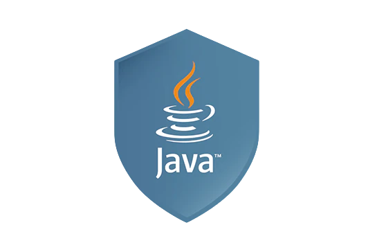

Java
One of the most widely used programming languages, Java is used as the
server-side language for most back-end development projects, including those
involving big data and Android development. Java is also commonly used for
desktop computing, other mobile computing, games, and numerical computing.

Python
Python is a computer programming language often used to build websites and
software, automate tasks, and conduct data analysis. Python is a general purpose
language, meaning it can be used to create a variety of different programs and
isn't specialized for any specific problems.

C#
C# is widely used for developing desktop applications, web applications and web
services. It is used in creating applications of Microsoft at a large scale. C#
is also used in game development in Unity.

My SQL
MySQL is a database management system.

PHP
PHP (Hypertext Preprocessor) is known as a general-purpose scripting language
that can be used to develop dynamic and interactive websites. It was among the
first server-side languages that could be embedded into HTML, making it easier to
add functionality to web pages without needing to call external files for data.

Node.js
Node. js is primarily used for non-blocking, event-driven servers, due to its
single-threaded nature. It's used for traditional web sites and back-end API
services, but was designed with real-time, push-based architectures in mind.